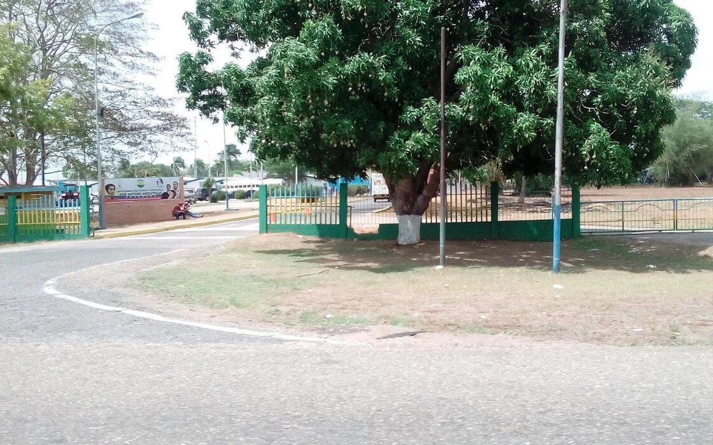

Pagina para registrar a los estudiantes becados del UPTJAA
Cuando estes listo para registrarte presiona el boton

El proceso de registro es facil y rapido, asi que no esperes mas.
Cuando estes listo para registrate presiona el boton
Conoce más acerca del UPTJAA
Si estas interesado en saber más de nuestra universisdad te invitamos a que visites nuestra pagina web, ahi conoceras mas a profundidad nuestro trabajp.